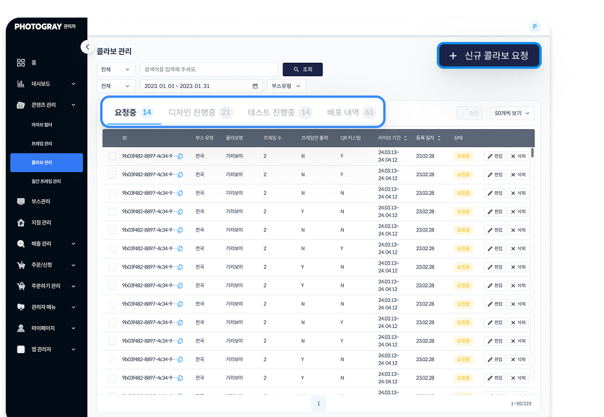
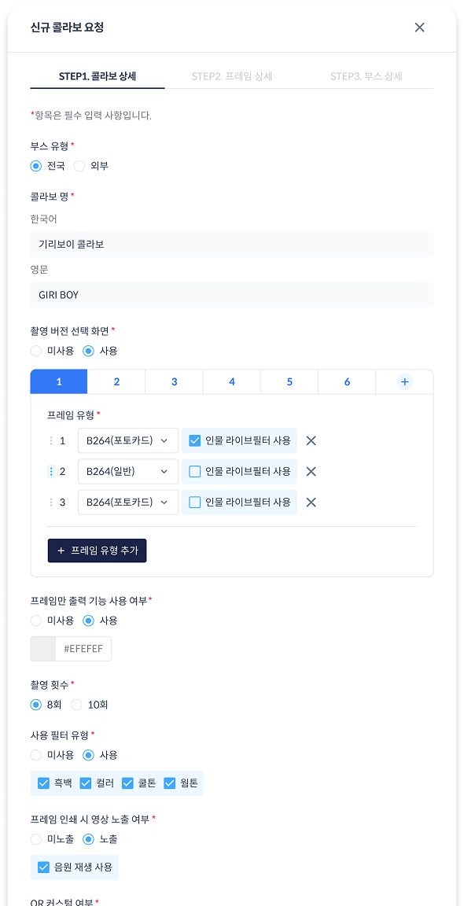
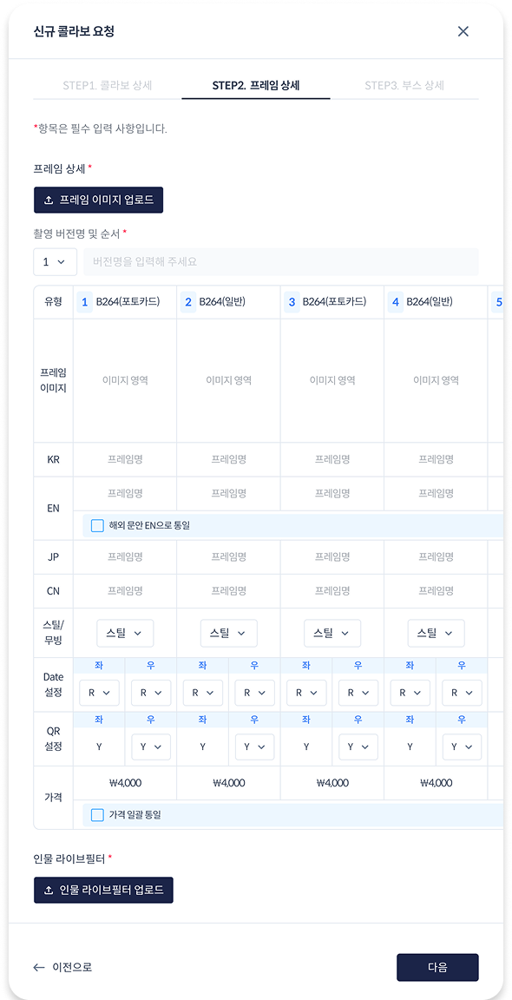
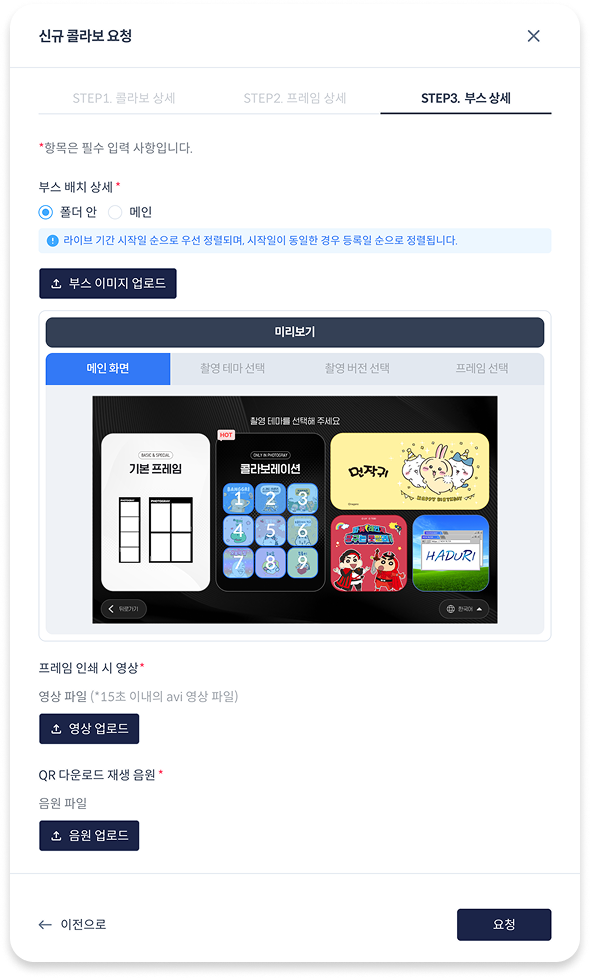
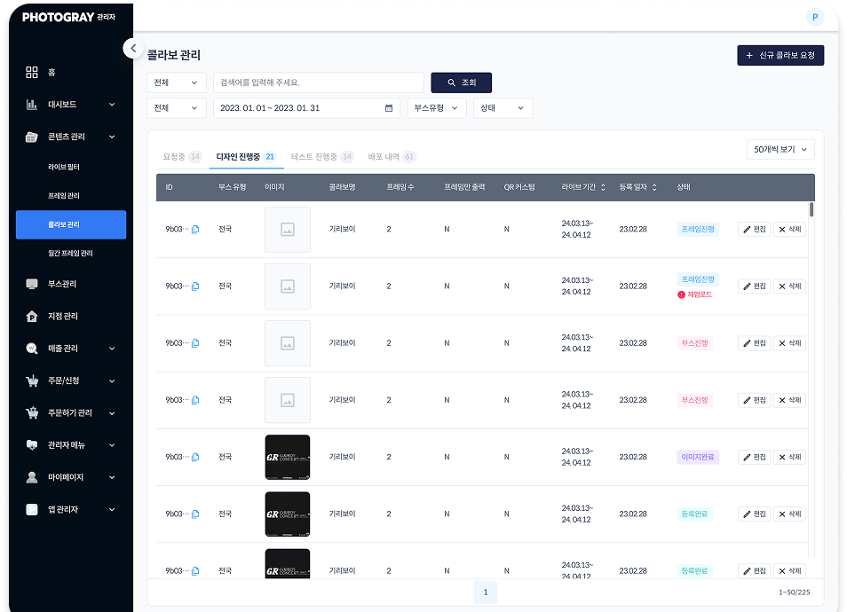
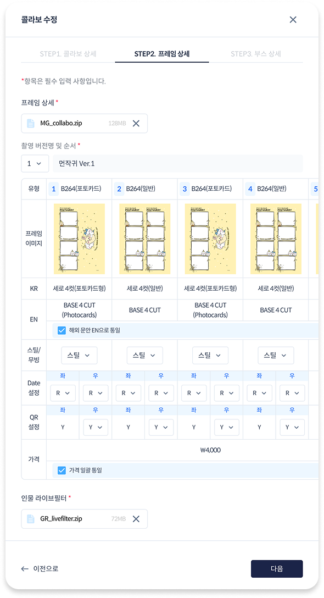
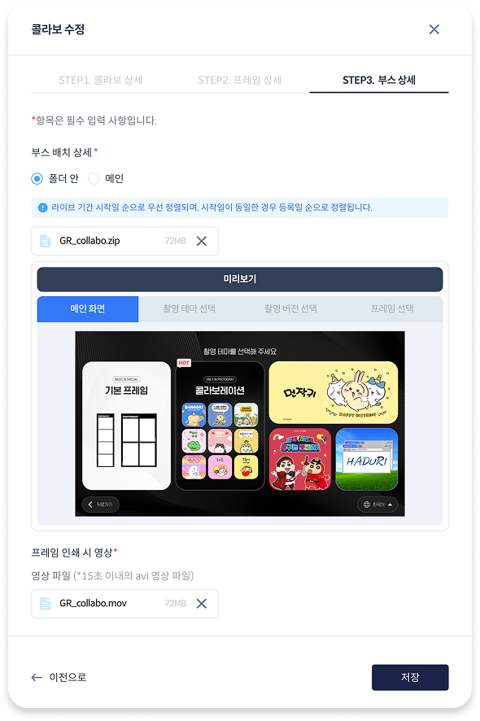
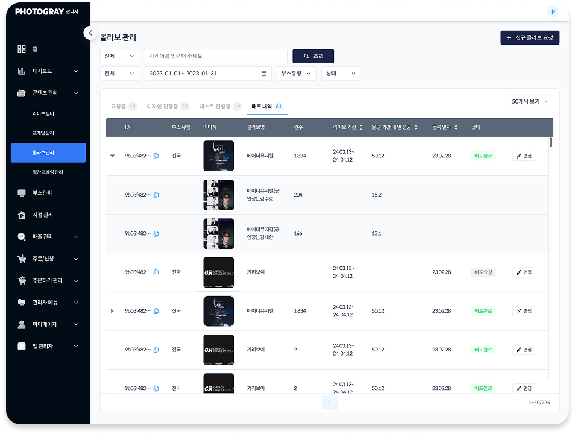

포토부스 매장·콜라보 운영을 수작업으로 처리하던 프로세스를 어드민 시스템으로 자동화해, 신규 서비스 기획부터 UXUI·디자인시스템 구축까지 리드했습니다.
포토부스 브랜드 콜라보를 진행할 때마다 프레임 등록, 매장 배포, 정산 등 여러 단계를 수작업으로 처리하고 있었습니다. 단계가 많고 담당자 의존도가 높아, 콜라보 하나를 준비하는 데 오랜 시간이 걸렸습니다.
내부 운영팀, 콜라보 파트너 브랜드
콜라보 준비·배포·정산을 수작업으로 처리, 사람에 의존하는 운영 구조
운영 단계 자동화로 리드타임 단축, 인적 리소스 의존도 감소
만약:
그러면:
담당자 의존도가 줄고, 전국 부스 배포까지의 리드타임이 크게 짧아질 것이다
협업 부서 인터뷰 진행 내용을 토대로 문제 정의
어드민에서 전 업무 프로세스 통합
개발 의존 없이 담당자가 직접 부스/프레임 테스트와 옵션 수정을 진행할 수 있어, AS-IS의 "부스 테스트" 단계가 별도 병목 없이 프로세스 안으로 흡수됐습니다.
프로젝트 진행 단계(요청중 → 디자인 진행중 → 테스트 진행중 → 배포 내역)에 맞춰 탭 메뉴를 구성하고, 각 단계별 화면 UX설계·디자인을 진행했습니다.


STEP1 · 콜라보 상세

STEP2 · 프레임 상세

STEP3 · 부스 상세 + 미리보기
부스 유형·프레임 구성·촬영 옵션까지 3단계로 나눠 입력하고, STEP3에서 실제 부스 화면을 미리보기로 바로 확인할 수 있게 설계했습니다.
브랜드 콜라보 등록부터 프레임 배포, 매장별 노출 설정까지 단계별로 처리할 수 있는 관리 화면을 설계했습니다. 본사 부스에 먼저 데이터를 적용해 테스트·수정을 반복한 뒤 전국 부스에 배포하는 구조입니다.
업무 단계를 최소 12단계로 표준화해, 전국 부스 배포까지 어드민 워크플로 안에서 처리할 수 있도록 재구성했습니다. 배포 시 프레임별 데이터가 집계되고, 필요하면 수정 후 재배포할 수 있는 구조로 만들었습니다.
어드민 전용 컴포넌트(테이블, 필터, 상태 배지 등)를 새로 정의해 이후 다른 어드민 화면에도 재사용 가능하게 만들었습니다.

프레임진행 · 부스진행 · 이미지완료 · 등록완료 4단계 상태 배지를 정의해, 리스트만 보고도 각 콜라보가 어느 단계에 있는지 바로 파악할 수 있게 했습니다.


등록 후에도 담당자가 직접 프레임·부스 데이터를 수정하고, 미리보기로 실제 화면을 바로 확인하며 재배포할 수 있습니다.

콜라보별 라이브 기간과 운영 성과(건수, 내일 평균)를 배포 완료 시점부터 누적 집계해 한 화면에서 확인할 수 있습니다.